1. Elegir la audiencia
La web irá dirigido al público joven y femenino.
2. Paleta de colores
Para mi web usaré colores pasteles y nudes, para representar la marca y llegar a nuestra audiencia.
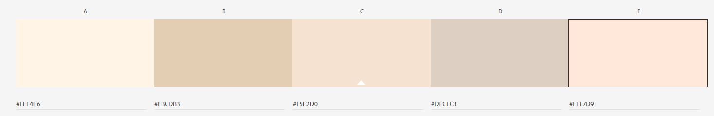
Tipo de letra elegida: https://fonts.google.com/specimen/Alice#standard-styles
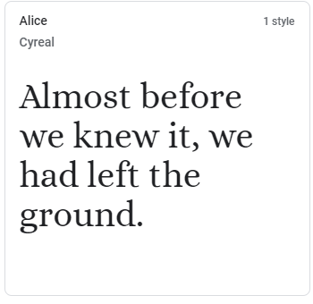
Tendremos que crear un moodbroad con una serie de imágenes ajustándolas con la paleta de colores elegida
Con ello seleccionamos las imágenes de lo queremos que llegue al consumidor.
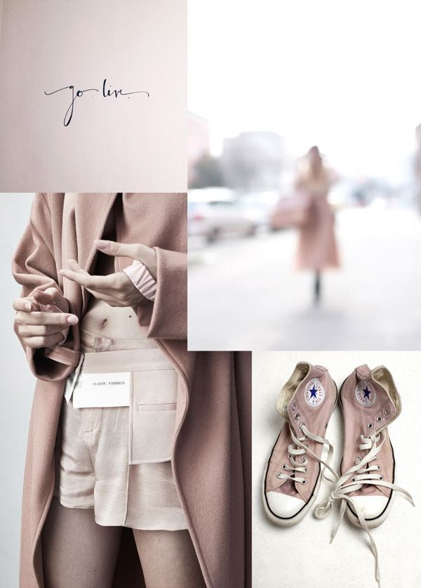 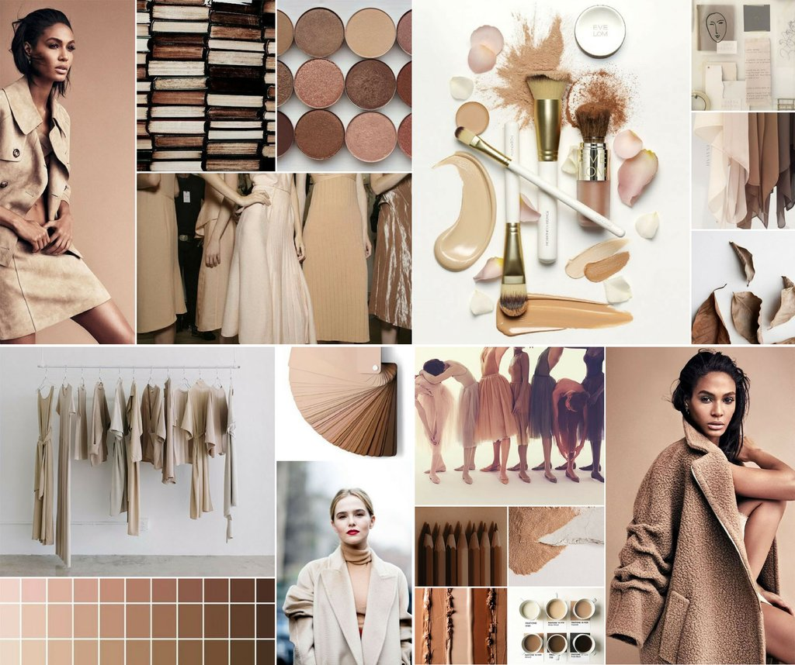
5. Elementos gráficos
Usaremos elementos de:
* Botón elegido
El botón será de color claro para darle armonía al conjunto de colores con la forma más redondeada.
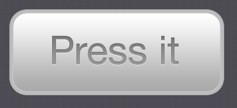
*Barra de Navegación
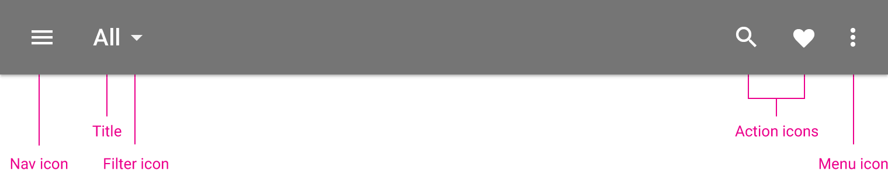
*Elementos redes sociales
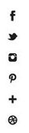 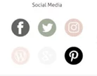
*Barra de Búsqueda
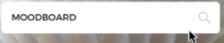
6.Logos Propuestos
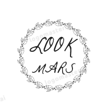 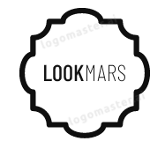